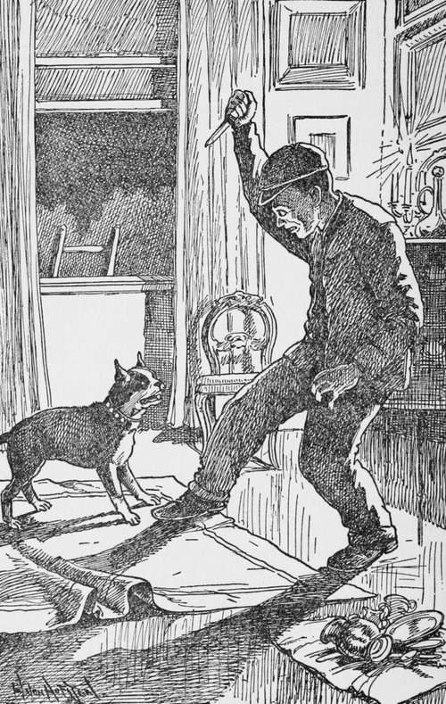
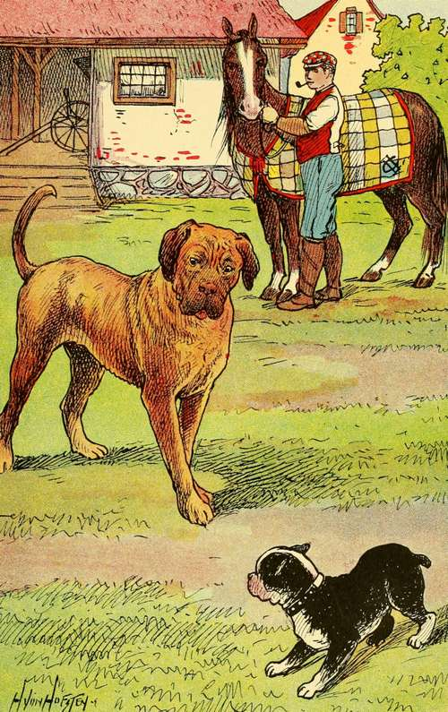

Chapter V. Patsy And His Little Lame Mistress
Description
This section is from the book "Dogs And Puppies", by Frances Trego Montgomery.
Chapter V. Patsy And His Little Lame Mistress
The fourth puppy was sold to a very wealthy little lame girl, and he went with her everywhere, even to Europe.
Once, when they were on board one of the big Atlantic steamers, a gentleman offered the little girl two thousand dollars for her dog, but she would not have taken a million if he had offered it. He was not for sale, and forever after she disliked the man for asking her to sell her pet.
"Think of anyone's asking me to sell my darling Patsy," she said. "I would as soon think of cutting off one of my hands as of selling him. Why, he has been with me all my life and helped me bear my pain. When my poor limb was in a cast, and I could not move off the bed, he would come and lay beside me, and his big eyes told me as plainly as if he had said it, that he was sorry for me. Then too, when I was a little thing and was very nervous, nurse would lay him beside me in my crib, and I would fall asleep. When I awoke all my nervousness was gone, but the strangest part of it was, that Patsy would seem weak and tired, so I must have taken his strength, and that is why I feel as though he had suffered with me.
"Sell him! Well I guess not. Patsy, come here," and Patsy, who was never far away from his mistress, came and lay his head on his mistress' lap, and looked up into her eyes as much as to say, 'What do you want, little mistress.' "
And after that no one wondered that Patsy was not for sale. He always slept outside the door of his Miss Ellen's room, on a pillow that was kept there for him, and no one could go in the door whom he did not know. Little Miss Ellen was as carefully guarded as if a company of soldiers were stationed there. And if anyone struck at his mistress, even in play, Patsy would growl, and if they kept it up, would seize their clothing in his teeth. No one should hurt while he was near.
One time when his mistress was taken to the hospital, where she was to undergo a severe operation, Patsy could not understand why she had left him, and whined all night outside her door, and wandered around the house all day, from room to room, in search of her. They could scarcely persuade him to eat or drink. And finally, when his mistress was strong enough to be brought home, Patsy's delight knew no bounds, and they could hardly drag him away from the bed-side.
And then, too, Patsy had been the hero of an exciting adventure that had made him the envy of all the dogs of the neighborhood at the time, and had made the family more loath than ever to part with him.
It was late on one blustery, freezing afternoon in January, during a heavy snow-fall, when every one had gone away, even the servants, leaving the house unguarded except for Patsy.
Sitting before the grate fire for a whole afternoon is not very pleasant, when there is no one to talk to, and nothing to watch except the flames, so for exercise Patsy decided to go out for a chat with his old friend Bob, in the stables. Bob was one of the old family horses, who had taken quite a fancy to Patsy, and told him a great many stories of his experiences. The two chatted for a while, Bob telling Patsy about the new stable boy, whom he did not like. He said he was careless, and did not put his blanket on when he came in from driving, and was not careful with his feed.
Before long, however, Patsy remembered that he should be watching the house, and so said to his friend:
"Well, I must be going now. I heard my master telling the other night that some thieves had robbed a house not far away, and it might be they would try to come here. They hadn't better".
"Yes," said Bob, "I heard the men out here talking about it, too. It's queer my master would let every one go away and leave the house without any one to guard it".
"Why, he knew that I was as good as twenty watchmen," and Patsy put his head high in the air, his pride hurt to think his friend did not appreciate him.
"Oh, I know you will not let any one get in," answered Bob, "but just the same there are times when a man can do more than a dog".
"Well, I'll go in, anyway. They always leave the window in the cellar open, and I can get up through the house that way".
And so Patsy started back to his post. But no sooner had he reached the top of the stairs than he knew something was wrong. Some one was in that house who had no business to be there! He rushed into the parlor and hall, but saw no one, and at first thought his sense of smell must have misled him, but suddenly he heard a chink, chink, coming from the dining room. He did not wait to think, but in a flash was jumping at the throat of a burglar, who was so much engaged in transferring some silver forks from their cases into a black bag, that he did not hear Patsy coming.
SUCH A ROUGH AND TUMBLE FIGHT!.
Such a rough and tumble fight, and such cursing! No matter which way the man turned Patsy held on like grim death. Twice Patsy nearly had him by the throat, but both times the man jabbed at him with something sharp. During the struggle the man had edged toward an open window by which he had come in, and giving Patsy one desperate jab, flung himself out of the window. Not before Patsy had time to get a grip on his leg, though, which even the fall on the ground did not loosen. It was only after being dragged almost a hundred yards, fighting madly all the way, that the loss of blood told, and his grip relaxed. The man left him for dead, and ran as fast as he could, fearing that some one had been aroused by the noise.
For a long time poor Patsy did not know where he was, but after a time he gathered strength enough to drag himself towards the house. He could not get up the steps though, and lay, half dead with cold and loss of blood, right on the front walk, where the master coming home at evening, found him.
At first he could not imagine what had happened, but one look at the dining room, with its silver scattered where the burglar, in his surprise, had dropped it, and at the chairs upturned in the struggle, and the open window, and the bloodstains on the snow outside, told them all that was necessary of the story.
To say that Patsy was praised would be putting it very mildly. The master himself saw that the wounds where the knife had cut him, were properly dressed, and patted him on the head, and called him, "Good old Patsy," over and over again, until Patsy thought that he would be willing to do it all over again, even if his head did seem almost to be bursting, and his body was so bruised and sore that even the light touch of his mistress seemed torture.
HAD THE COACHMAN NOT RESCUED ME, I WOULD HAVE BEEN SWALLOWED ALIVE.
I might add that from the tracks in the snow, and a cap which had been dropped in the dining room during the fight, the thief was captured.
Patsy was taken down to the police station to help identify the man, which he did to the complete satisfaction of every one. He could not see why his master did not allow him to continue the fight then and there, and it was only by holding him very tightly that his master did keep him from jumping at the man's throat.
The burglar was really afraid at first, until he saw that the dog was safely held. He had had about all of Patsy he wanted for a long time to come, and had bites all over his body. I'm not sure but that Patsy got off easier than he did. When he saw Patsy could not reach him, he cursed him, and said that if it had not been for him, he never would have been caught.
So you see it was no wonder the other dogs were a little envious, for of course the whole story was printed in the paper, and men would stop Patsy's master on the street, and congratulate him on possessing such a fine dog..
The day after the adventure, several dogs of the neighborhood were discussing Patsy and his bravery, when Brindle, a disagreeable young puppy, who thought he knew all there was to know, spoke up:
"Any dog could have done that. It is only that we have never had the chance. And now Patsy will think he is too good to associate with us".
"Yes," said Leo, a wise old dog, and quite a friend of Patsy's, "Any dog could, but I know some that wouldn't dare. It seems to me that I saw some young puppy chase that young kitten of Martin's this morning, looking as if he wanted to eat her up, but when she turned on him, what do you think he did? Why he turned tail and ran home as fast as he could".
The dogs all laughed, for they knew Leo meant Brindle.
"Well, who wouldn't run from her," answered Brindle. "She is the most vicious little thing I ever saw. Why see this long scratch on my nose ? She might have known I wouldn't hurt her. I was only trying to scare her anyway".
"Well," spoke up Nellie, a warm admirer of Patsy's, and with whom, by the way, Patsy himself was very much in love, "if I ran from a cat, I guess I wouldn't talk about Patsy".
"What did I say about Patsy?" complained Brindle. "You always jump on me for nothing." Brindle was in love with Nellie himself, and was trying to straighten matters out, but both Leo and Nellie turned their backs on him, and went away.
As for Patsy, he did not care whether Brindle thought him brave or not. He knew his master and mistress were proud of him, and that was quite enough for any dog. And until Patsy died, the family never tired of telling to strangers the story of his struggle with the burglar, and Miss Ellen always said she felt perfectly safe alone, as long as Patsy was near, and she would look at Patsy so fondly that he would come and rest his head on her lap, his old way of telling her how much he loved her.
And so, you see, with a master and mistress that loved and petted him, and looked up to as a very brave dog by all the other dogs of the community, Patsy grew to a good old age, with every comfort one could want.
Continue to:
- prev: Chapter IV. What Happened To Buster
- Table of Contents
- next: Chapter VI. Beans And The Orphan Boy